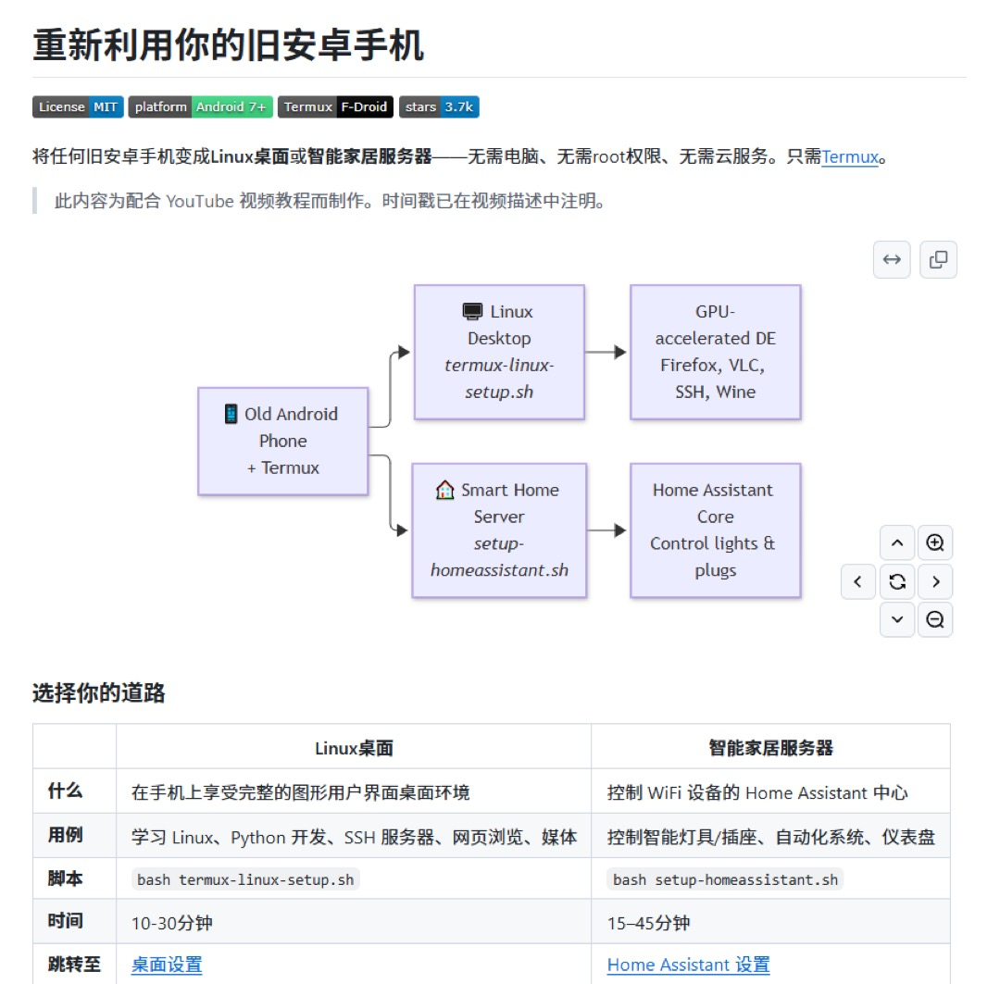
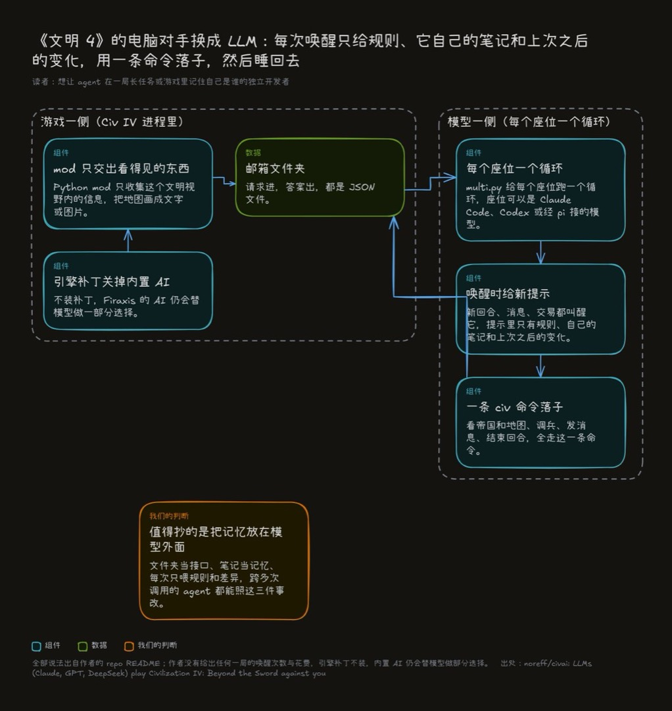

本期速览
01 OpenCode 四条规则治防御代码
02 Magpie Web 版上线支持远程部署
03 Gemma 4 26B 模型 2GB 内存可跑
05 Anthropic 倡导单 Agent 架构
07 文明4 LLM mod 用文件存长期记忆
01｜OpenCode 四条规则治防御代码
来源（X） · @Rakel076 · 2026-10-25 13:00
OpenCode（开源的编程 agent）仓库里有一份 AGENTS.md，专门有一条治这个。我去翻了整份原文，Style Guide 那一节有 4 条可以直接抄进自己的 AGENTS.md 或 CLAUDE.md：
1、要为一个推测出来的、几乎不会发生的并发或安全边界加复杂度之前，先跟用户讲清楚：具体会出什么问题、概率多大、要多写多少，用户点头了再加。不许为了「理论上更稳」悄悄扩大范围。
2、外面进来的数据只在入口校验一次，往里传就用定好类型的值，不要每一层再判断一遍。
3、只用一次的逻辑不要提前抽成函数，直接写在调用的地方，除非它会复用，或者真藏着一块复杂的东西。
4、能不用 try/catch 就不用，能一个函数写完就别拆。
第一条等于让 AI 每次想多写代码之前，先报个价给你。
原文是英文，整段贴进去就行，AI 都看得懂。仓库地址放评论区了。
02｜Magpie Web 版上线支持远程部署
来源（X） · @liangzhu_AI · 2026-10-25 09:35
很多独立开发者把各种 Agent 装在自己笔记本上，只要一合上盖子，所有后台任务全断。
这根本不叫自动化，这叫“人肉运维”。
把网关直接扔到海外 VPS 上：
用 Docker 一键部署，配置好统一访问密钥；
无论你在家、在咖啡馆，还是手机临时排查，打开浏览器就能直接接管后台会话。
更关键的是：你本地写的脚本、云端跑的定时任务，走的是同一套 Token 配额和故障转移逻辑。
建议想做长期稳定交付的朋友存下原推这个部署方案，随时搭一套自己的私有节点。
引用内容
yetone @yetone
· magpie web：在浏览器里打开完整界面，WSL、SSH 远程的机器都能用
· Docker 镜像：https://ghcr.io/yetone/magpie（amd64 / arm64）
· MAGPIE_WEB_KEY 固定访问密钥，适合长期作为服务运行
部署说明：https://github.com/yetone/magpie#docker
03｜Gemma 4 26B 模型 2GB 内存可跑
来源（X） · @0xluffy_eth · 2026-10-25 17:40
这模型正常要占 14.3 GB 内存。TurboFieldfare 只在内存里留 1.35 GB 的核心，每个 token 需要哪部分参数，才从 SSD 里取，所以大约 2 GB 内存就能跑起来。
→ 8 GB 的 M2 MacBook Air 上每秒约 5 到 6 个 token，M5 Pro 上 31 到 35 个
→ 原生 Mac 应用：点 Download Model，再点 Load Model，然后就能打字了
→ 还带命令行和一个本地 OpenAI 兼容服务，别的应用可以直接调用
需要 Apple Silicon 的 Mac、macOS 26、苹果的 Swift 工具，还有大约 15 GB 空闲磁盘。
git clone https://github.com/drumih/turbo-fieldfare.git
cd turbo-fieldfare
swift build -c release
.build/release/TurboFieldfareMac
Apache-2.0 协议，6.9K stars。
04｜丁香园临床 App 七成提问来自三甲医院
来源（X） · @Alex_perception · 2026-10-25 11:01
据称目前丁香园覆盖了全国超过90%的医生。今年1月该公司上线一个款名为临床决策的APP。据其统计，截至10月份，医生已经给该AI产品提出了近1000万个问题。
（1）目前70%的提问人都来自城市三甲医院，三四线城市和基层的医生使用AI的比例较低。——这位创始人推断，三甲医院的医生更多时候是一种“有意识的未知”，在面对新的疾病、新的状况时，清楚自身能力的极限，因此会更主动询问AI。而基层医生可能是“无意识的未知”，他的想法可能是，“我周围的医生都这么干”“我们十几年都这么做下来了”，不觉得有问题可问。
PS：这也是我所担心的，医生凭借经验治疗这已经是大家的常识，但这些常识就一定是正确的吗？AI的介入哪怕给医生多提个醒，可能结果也会有很大的不同，虽然这种概率并不高，但站在生命的角度上我认为这很需要。
（2）医生本身都是专科出身，但病人往往身上可能有几种病。最典型的就是系统性慢病CKM（心血管-肾脏-代谢综合征），如果医生的经验并不充分时，现在AI的辅助给了医生更多需要注意的地方。
PS：虽然在联合会诊很常见，但在门诊中这却并不常见，至少我和家人就遇到过两个科室医生对病情的判断不一致的情况，虽然不是完全打架，但如果有AI能辅助判断/提醒会诊，我想这并不是一个坏事。
05｜Anthropic 倡导单 Agent 架构
来源（X） · @ScarletKc · 2026-10-25 13:20
思路是把 router、planner、按领域拆的 subagent，能折回主 agent 循环的都折回去，换成按需加载的 skill 和 tool
他们经常看到的方案是一层层叠上去的，意图分类器、固定的多步推理流水线、用户分群、单独的推荐分支，最上面再套一层多 agent 编排。给的反馈往往是，这套结构大部分在替模型干它早就不需要别人替的活，一个写清楚的 system prompt、四五个很薄的数据 tool、加上严格的输出护栏，就够覆盖大部分场景
Applied AI 团队在几家企业的部署里对比过，单 agent 加 skill 的质量经常同时赢过一个 prompt 包办一切和多 subagent 两种做法，很多时候成本和延迟也更低。有家客户拿单循环跟自己的多 agent harness 比，快了差不多一倍
新的循环是一个模型、一个上下文窗口，harness 只管设上限，轮数、成本预算、写操作要过闸。模型每轮发一批 tool call，harness 并行跑完，把原始结果还给同一个模型，由它决定继续调工具、问用户还是回答。计划也是模型第一轮自己写进上下文，结果回来再改。写计划的就是执行的那个，中途随时能改，这是跟 orchestrator 那套最大的区别，以前用代码按规则表改计划的那一步可以直接删了
原来各个 subagent prompt 里装的东西分到几个地方。团队做事的步骤、顺序和判断写成 skill。校验、审批这种硬限制，还有查记忆这种对话中途才要的，放进 tool。政策、指标定义、产品规格放知识库，让模型自己去查，别用代码查好了往 prompt 里粘。代码只留给便宜又几乎每次都要跑的步骤，和 tool 内部那些机械活
上下文不会爆，靠的是渐进式披露。skill 和 tool 平时只露一句简介，用到才完整加载，tool 那边靠 tool search 延迟加载。以前拆 subagent 最主要的理由就是上下文塞不下，这下基本没了，Claude Code 给新模型的 system prompt 砍了 80% 以上，其中就有这块。而且所有步骤的结果都在同一个上下文里，模型能前后连起来看，比 subagent 各交回一份摘要强，也不会交接一次丢一次细节
模型也撑得住了。从 Opus 4.5 开始，一个循环里能管的事就比大多数团队以为的多得多，Opus 5.5 和 Fable 5.1 的 thinking 都关不掉，还会边做边报进度边自查。帮客户迁新模型的时候，拦着新模型多干活的常常就是那套死板的多 agent 结构
团队分工也跟着变。各团队不再各交一个 agent，改成交 skill 和 tool，一个很小的中央团队管 system prompt 和端到端质量，新的 skill、tool、eval 上线前都要过他们。不然就是每个团队往 system prompt 里塞一句，最后规则打架、口吻也不统一，文章管这叫 Frankenprompt
各团队交上来的 tool 要按用户意图分组，别一个 API 一个 tool，定义超过 30 到 50 个，选工具就开始变差。前置条件和权限也写进 tool 里，缺了前一步的结果就返回一句模型能照做的提示，用户没权限就返回一句普通的拒绝。这样一个循环就能服务权限不同的用户，不用每个权限级别配一个 agent
subagent 当然还有用，三种情况还是该拆。单循环因为上下文膨胀效果有了能测出来的下降，几件事要并行、各开一个用完就丢的干净上下文，或者单个 agent 老选错工具、system prompt 里指令打架。要拆也按上下文拆，给它一块不太依赖别处的活，让它交回精简的结果。按问题类型拆就成了传话游戏，交接一次失真一次。留下的 subagent 最好当 tool 调，主 agent 一直握着跟用户的对话
迁移别想一步到位。先做 eval，10 条标准样例就够起步。从调用最多的开始折，生产流量里经常前后脚被调的两个专家 subagent，就适合先合成一个。之后一次只折一个，prompt 改成 skill，API 调用改成 MCP tool，再跟原来比
比的时候别只看总分，要看哪些题翻了。他们拿一个示例客服 agent 试，折完延迟降了，但一个本来能过的流程坏了，主 agent 手里有查订单的 tool，就自己答了，没去问管物流的那个 subagent 要送达日期。这个问题跑两次只出现一次，这种最阴。所以生产上一起跑的每条 agent 链、每条不能破的规则都要有对应的题，每题多跑几遍。折回去的版本分数更低，才继续留着 subagent
配套还有个迁移工具包，能先在模拟系统上跑 demo。几个 /claude-api skill 里我觉得 prompt-audit 最有意思，专门找当年为旧模型写的、现在反而让 agent 变慢变死板的规则
对写 harness 的人来说最扎心的是这句，每出一代新模型，就能把更多决策从 harness 挪进模型里。我感觉 harness 以后只会越写越薄
06｜Termux 让旧安卓变 Linux 桌面
来源（X） · @Manorgw · 2026-10-25 11:16
① Linux 桌面：GPU 加速能开，Firefox、VLC、SSH 都跑得动，连 Wine 也能玩玩
② 家庭服务器：Home Assistant 直接部署，灯、插座这些智能设备随手控
骁龙设备兼容性相对更稳，两套环境还能并存。
一台旧手机重新派上用场，总比搁抽屉里吃灰强得多。
🔗 https://github.com/mayukh4/linux-android
🎬 教程：http://youtube.com/watch?v=tYm2rQpkOcg&feature=youtu.be

07｜文明4 LLM mod 用文件存长期记忆
来源（X） · @yibie · 2026-10-25 14:14
作者的答案是把三样东西放到模型外面。
1. 笔记。每个文明在游戏目录里存一份自己的笔记：人设与计划，对其他文明的档案，还有藏着的秘密。每次叫醒它，笔记重新塞回提示里。记忆是一个文件，跟对话历史无关。
2. 邮箱。mod 和模型不直接通信，靠一个文件夹传 JSON，请求进、答案出。
3. 一条命令。civ。看自己的帝国和地图、调兵都走它；发消息、开交易、结束回合也走它。人类能做的动作都在这条命令里。
叫醒的时机是事件：新回合、收到消息、收到交易。每次给的都是全新提示，只装三样东西——PLAYBOOK.md 里的规则、它自己的笔记、上次之后发生了什么。它落子，改笔记，睡回去。
信息隔离做得很实。mod 只收集这个文明看得见的东西，雾战和人类玩家一样。游戏引擎被打过补丁，把这个文明的内置 AI 关掉，落子才全是模型的。
对话这一层也能拿来玩：公开和私聊、交易、投票都走同一条通道，每条消息还附一条模型本意的私有注记，复盘时能看出它嘴上说的和实际想做的差多远。
我的判断：值得抄的跟「让 AI 打游戏」没什么关系。值得抄的是把 agent 的长期状态放到模型外面，文件夹当接口，笔记当记忆，每次只喂规则和差异。跨多次调用的 agent 卡在记不住上，先照这三件事改。
门槛写在 repo 里。不装引擎补丁 mod 也能跑，但内置 AI 会继续替模型做一部分选择，补丁得自己用 BtS 3.19 的 SDK 和 MSVC 7.1 编译。作者在 Mac 加 CrossOver 上开发测试，Windows 要改 http://install.sh 里的路径。另外需要 Python 3.10 以上和至少一个 agent CLI，用订阅就能跑，不用 API key。
一局跑了多少次唤醒、花了多少钱，作者一个数没给。repo 里有 http://metrics.py，按 API 价格把唤醒次数、思考时间、消息与交易数算出来，值不值得跑得自己先跑一局。
原文链接在评论区
#Agent #LLM #游戏

08｜大模型学习路线图分 8 阶段 51 点
来源（X） · @antiAIvo · 2026-10-25 22:23
我做了一张大模型学习路线交互图
https://nano-ai.tech/map/
从 2017 年的 Transformer，一直到今天的 DeepSeek-V4
很多人学大模型的问题不是资料少
是资料太多，不知道先看什么、后看什么
论文一篇篇读，读到后面发现前面的没懂
所以我按学习顺序排成了 8 个阶段：
① 奠基：Transformer、GPT
② 规模与训练：Scaling Laws、并行训练
③ 现代架构：LLaMA、RoPE、GQA、MLA
④ 混合专家：Switch、Mixtral、DeepSeekMoE
⑤ 对齐与推理模型：RLHF、DPO、GRPO、R1
⑥ 推理部署：KV Cache、量化、vLLM
⑦ 今天的主流模型：DeepSeek、Qwen、Kimi
⑧ Agent：ReAct、函数调用、MCP
一共 51 个知识点，22 个标了必读
每一张卡片点开，都写清楚四件事：
这是什么、为什么重要、要学会什么，学它之前要先懂哪几个
不知道从哪开始
就按页面上推荐的 21 站顺序走：
先把一个模型从头到尾吃透
再看每个零件是怎么一步步演化的
标着「本站」的知识点
网站上有对应的图解或手写教程
可以直接点进去，一格一格算一遍。